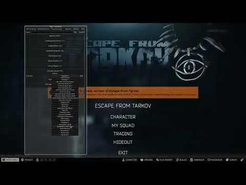

Custom UI Sounds
- Downloads
- 254
- Favourites
- 9
- Mod lists
- 6
Custom UI Sounds
Replace Escape From THE CITY’s Vanilla UI sounds with a custom soundpack

- Audio Inconsistencies: Handpicking these files was a massive task that took me hours, so some packs might not be 100% perfect. Please report any audio “issues”.
- Vanilla Audio: Certain packs rely on vanilla sounds in places where there weren’t enough source files available to replace them.
- Change your UI soundpack instantly from the F12 menu
- Includes a growing library of custom UI soundpacks
- Keeps vanilla sounds available as a fallback
- Import your own custom soundpacks (Add-Ons)
- Addtional Soundpacks, please request some :3
- QoL Features, please request if you have a suggestion
Special thanks to:
- Saga for fine-tuning code and helping with questions
- Terkoiz for Thumbnail & Mentoring
Version 1.0 includes the following soundpacks:
- Bloodborne
- Call of Duty Advanced Warfare
- Call of Duty Black Ops 1
- Call of Duty Black Ops 2
- Call of Duty Black Ops 3
- Call of Duty Black Ops Cold War
- Call of Duty Ghosts
- Call of Duty Modern Warfare (2019)
- Call of Duty Modern Warfare 2 (2009)
- Call of Duty Modern Warfare 2 (Campaign Remastered)
- Call of Duty Vanguard
- Cyberpunk 2077
- Dark Souls 3
- Dying Light
- Dying Light 2 Stay Human
- Elden Ring
- Fallout New Vegas
- Insurgency Sandstorm
- LEGO Marvel Super Heroes
- Metro Exodus
- Minecraft (PS3)
- PlayStation 4
- Resident Evil 2 (2019)
- Resident Evil 2 (2019) Retro
- SEGA Dreamcast (Requested by Cj)
- Slime Rancher
- Stardew Valley
- The Division 1
For mod authors who would like to create their own soundpacks as a Add-On:
- Create a folder in the /Sounds where all the other soundpacks are located.
- Put in your soundfiles into that folder.
- Rename your soundfile to have a specific name from the Soundtype list below.
- You MUST have the exact same name as the Soundtype for your soundfile to even trigger.
- A “Available UISounds.txt” is also provided in the /Sounds folder on launch
- The File structure MUST look like this: “\BepInEx\plugins\CustomUISounds\Sounds\XYZ”
- Supported fileformats: .mp3 ┃ .wav ┃ .ogg
- Please do NOT include the .dll file in your AddOn.
Soundtypes:
-
AchievementCompleted
-
BackpackClose
-
BackpackOpen
-
ButtonBottomBarClick
-
ButtonClick
-
ButtonOver
-
ChatSelect
-
DialogButtonClick
-
DialogButtonHover
-
ErrorMessage
-
GeneratorTurnOff
-
GeneratorTurnOn
-
InsuranceInsured
-
InsuranceItemOnInsure
-
MalfunctionExamined
-
MenuCheckBox
-
MenuContextMenu
-
MenuDropdown
-
MenuDropdownSelect
-
MenuEscape
-
MenuInspectorWindowClose
-
MenuInspectorWindowOpen
-
MenuInstallMag
-
MenuInstallModFunc
-
MenuInstallModGear
-
MenuInstallModVital
-
MenuMapTag
-
MenuModdingClose
-
MenuModdingOpen
-
MenuOpenContainer
-
MenuStock
-
MenuTraderPress
-
MenuWeaponAssemble
-
MenuWeaponDisassemble
-
PlayerIsDead
-
QuestCompleted
-
QuestFailed
-
QuestFinished
-
QuestStarted
-
QuestSubTrackComplete
-
RepairComplete
-
TacticalClothingApply
-
TacticalClothingBuy
-
TradeOperationComplete
Found a bug or have a soundpack request?
- Bug Reports: Please open an issue on the GitHub Issues page.
- Feature Requests: Feel free to suggest new features or request soundpacks in the comments.
- Please avoid posting log files in Forge comments. GitHub makes it much easier to troubleshoot problems.
Version
1.0.0
4.0x Version